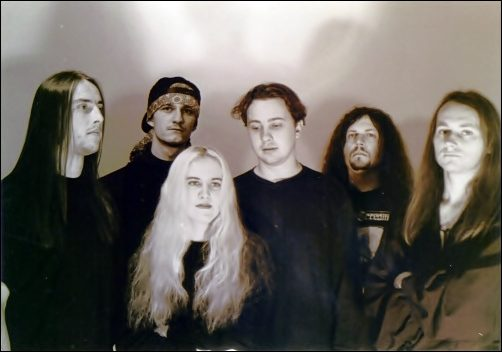

Eight releases. One melancholy. The story of a band that has been turning weight into melody for more than three decades.
01
First scream
1992—1995
Cemetery of Scream began in 1992. After several local bands fell apart, Marcin Piwowarczyk (guitar) and Grzegorz Książek (drums) started writing material that would move away from the thrash and death metal of their previous groups. In April 1993 they recorded the “Sameone” demo at Gamma Studio in Kraków. Jacek Królik (bass) and Marcin Kotaś (vocals) joined the session and soon became permanent members. Thirty-two minutes of nostalgic, symphonic music with dense keyboards went onto a tape that was warmly received by the underground press and the fans.
In autumn 1993 Artur Oleszkiewicz (guitar) and Kasia Rachwalik (keys) joined. At the end of July 1994, right after playing the Strash'ydło 94 festival, the band returned to Gamma Studio to record the debut album “Melancholy” (1995). Friends helped in the session: Piotr Łabuzek (keys, production), Magda Jaglarz and Paulina Piwowarczyk (vocals), and Paweł Góralczyk (guitar solos).
Marcin Kotaś wrote all the lyrics on “Melancholy” — a story of sorrow, beauty, fear and pain that, together with the music and artwork, formed a single whole. The video for “Anxiety” appeared on the “Beauty in Darkness” compilation (Nuclear Blast) alongside Lacrimosa, Tiamat, Love Like Blood and Therion. The album collected enthusiastic reviews, including album of the month in the Dutch “Aardschok”.
„Nostalgia, melody, gloom, simplicity pushed to perfection…”
Review of the “Sameone” demo, 1993
02
The age of melancholy
1996—2002
In June 1997 the band recorded “Deeppression”. Paweł Góralczyk, previously of Hellias, joined the line-up; the music lost none of its force. Germany's “Rock Hard” wrote: “…Cemetery of Scream from Poland, next to Vader, is top-quality goods…!!!”. The album was released by Kraków's Croon Records in Poland and by Serenades Records internationally.
In 1999 the “Fin de siècle” EP appeared as a prelude to “Prelude to a Sentimental Journey” (2000). Its mood was shaped by the politics of the time: the crises at the end of the century being resolved by wars in the former Yugoslavia and Chechnya. A return to decadence was the only answer that still carried a protest.
In 2002 the band played a series of shows in Germany and Austria. “Prelude to a Sentimental Journey” was released on 20 October 2000 by Mystic Production.

Archive, 1997. Photo: band archive.03
Event horizon
2005—2009
In 2005 Marcin Kotaś left the band and Sebastian Góralik took his place. In 2006, shortly after the Polish Dark Stars Festival tour (with Closterkeller, Darzamat and Moonlight), Metal Mind Productions released the fourth album “The Event Horizon”. That same year Grzegorz Książek left and Tomasz Rutkowski took over the drums. In 2008 Sebastian Góralik made way for Olaf Różański.
On 26 January 2009 the fifth album “Frozen Images” arrived, promoted by videos for “Cat's Grin” and “Prince of the City's Lights”. At the same time Metal Mind reissued the entire back catalogue in remastered form — and the “Sameone” demo finally appeared on silver disc in Europe for the first time.
„…Cemetery of Scream from Poland, next to Vader, is top-quality goods…!!!”
Rock Hard, 1997
04
Oceans
2012—2023
The following years were dominated by shows abroad, especially to the east. Cemetery of Scream became the first Polish band to play Chișinău, the capital of Moldova. They shared stages with Kreator, Amorphis and Moonspell, and supported Therion and Candlemass in Kyiv and Kraków.
In 2012 the band began recording “Oceans”. That same year Grzegorz Królik replaced his brother Jacek on bass. In between, the musicians took part in tribute albums for Lake of Tears, Paradise Lost and My Dying Bride; Marcin Halerz directed the video for “Evil Inside”. The “Full of Stars” clip announced the coming album.
“Oceans” was released on 3 November 2023 by Sleaszy Rider Records — fourteen years after “Frozen Images”. It is the sixth studio album in the discography and a return to the best qualities of gothic and doom metal: weight, melody and a melancholy that feels no need to hurry.
Line-up · “Oceans” (2023)
Olaf Różański
vocals
Marcin Piwowarczyk
guitar
Paweł Góralczyk
guitar
Katarzyna Rutkowska
keys
Grzegorz Królik
bass
Tomasz Rutkowski
drums
II / Discography
Eight relics
Six studio albums, a demo and an EP. Open a title to unfold the sleeve and read the full tracklist.
8 releases · 1993—2023
III / Spectres
Light after dark
Frames from clubs, festivals and sessions. No autoplay — this is a gallery, not an advert.
01Garage Świrek, Krakówphoto: Paweł Świrek02Garage Świrek, Krakówphoto: Paweł Świrek03Garage Świrek, Krakówphoto: Paweł Świrek04Garage Świrek, Krakówphoto: Paweł Świrek05Garage Świrek, Krakówphoto: Paweł Świrek06Garage Świrek, Krakówphoto: Paweł Świrek07Garage Świrek, Krakówphoto: Paweł Świrek08Garage Świrek, Krakówphoto: Paweł Świrek09Garage Świrek, Krakówphoto: Paweł Świrek10Garage Świrek, Krakówphoto: Paweł Świrek11Garage Świrek, Krakówphoto: Paweł Świrek12Garage Świrek, Krakówphoto: Paweł Świrek13Garage Świrek, Krakówphoto: Paweł Świrek14Garage Świrek, Krakówphoto: Paweł Świrek15Garage Świrek, Krakówphoto: Paweł Świrek16Zaczek Student Club, Krakówsource: Zaczek / alicjarzepa.pl17Zaczek Student Club, Krakówsource: Zaczek / alicjarzepa.pl18Zaczek Student Club, Krakówsource: Zaczek / alicjarzepa.pl19Zaczek Student Club, Krakówsource: Zaczek / alicjarzepa.pl20Zaczek Student Club, Krakówsource: Zaczek / alicjarzepa.pl21Zaczek Student Club, Krakówsource: Zaczek / alicjarzepa.pl22Zaczek Student Club, Krakówsource: Zaczek / alicjarzepa.pl23Zaczek Student Club, Krakówsource: Zaczek / alicjarzepa.pl24Zaczek Student Club, Krakówsource: Zaczek / alicjarzepa.pl25Zaczek Student Club, Krakówsource: Zaczek / alicjarzepa.pl26Zaczek Student Club, Krakówsource: Zaczek / alicjarzepa.pl27Black Wave Festband archive28Archive, 1997band archive29“Oceans” session, 2023band archive
01 / 29
Contact sheet
Click a frame to enlarge.
IV / Rituals
Rituals
There are no confirmed dates right now. The official calendar lives on Bandsintown — every show will appear there.
Status
No confirmed dates
When a tour is announced, it will appear on Bandsintown and Facebook first.